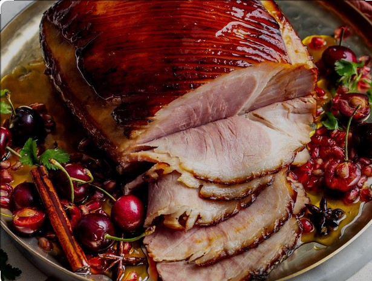

The Perfect Gammon Recipe

Gammon (Noun BRITISH): Ham which has been cured or smoked like bacon.
Ingredients
- 2 oranges, juiced
- 2 Red chillis, finely chopped
- 4 garlic cloves, finely grated
- 500 ml Woolworths Chinese-Style Plum
- orange basting sauce
- Ready to cook large Beech Smoked Gammon
- enough water to cover the gammon
- 2 bay leaves
- 3 stalks celery
- 1 onion, halved
- 2 carrots
Cooking Instructions
- Add the gammon to a large pot along with the carrots, onion, celery and bay leaves. Add enough water to cover the gammon before placing on a medium heat and bring to a gently simmer.
- Boil the gammon for 30 minutes per 500g. Remove the gammon once boiling is done and allow to cool slightly before removing the skin. Score the fat underneath and place in the oven to crisp the fat slightly at 200°C.
- Once the fat starts browning begin brushing on the glaze with is simply made by combining all the ingredients to form the sauce.
- Baste the gammon every 10 minutes until it a perfectly sweet and sticky.
- Allow the gammon to rest for 30 minutes before carving into it.